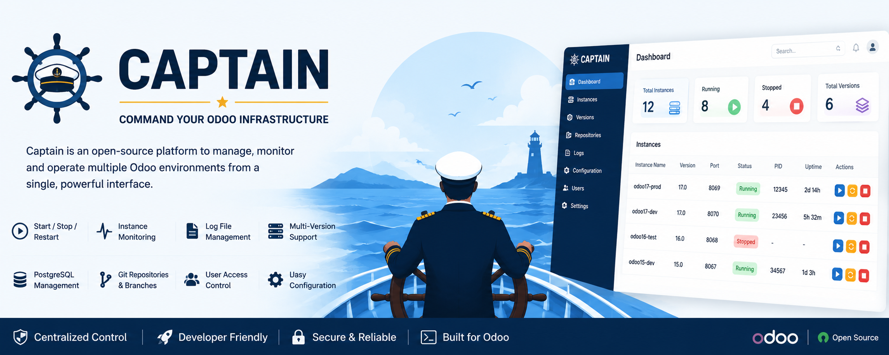
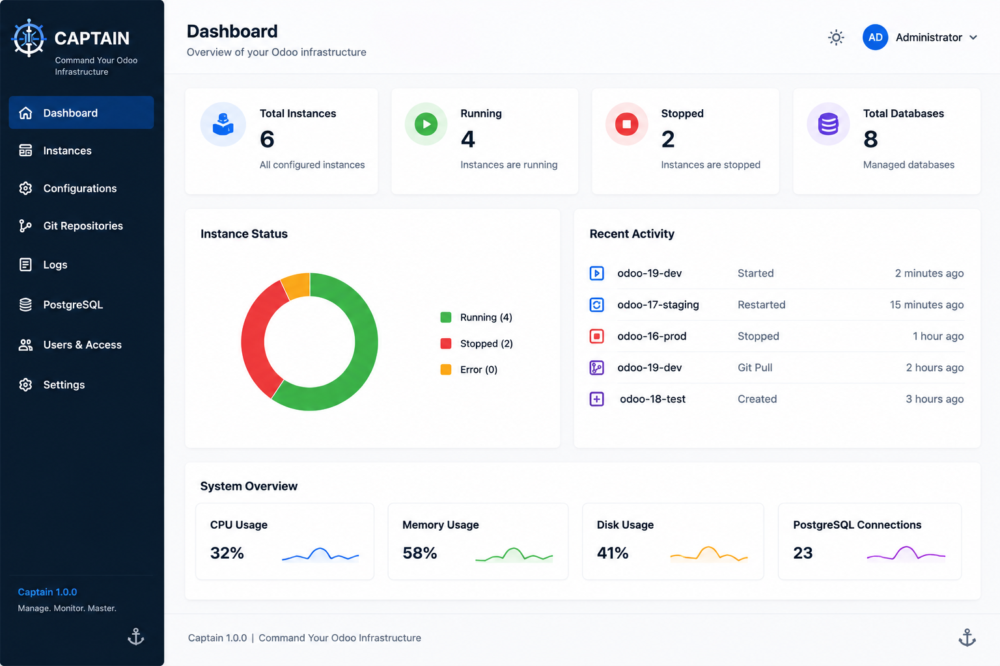
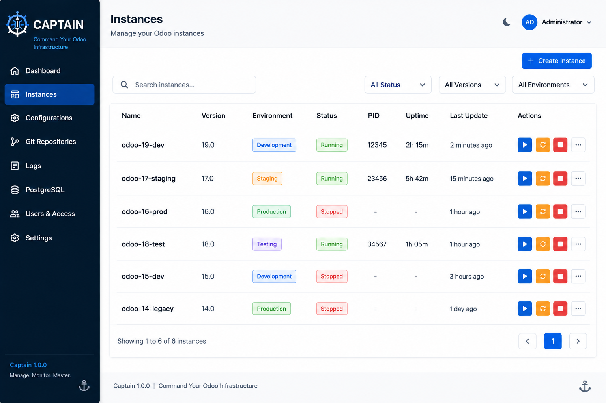
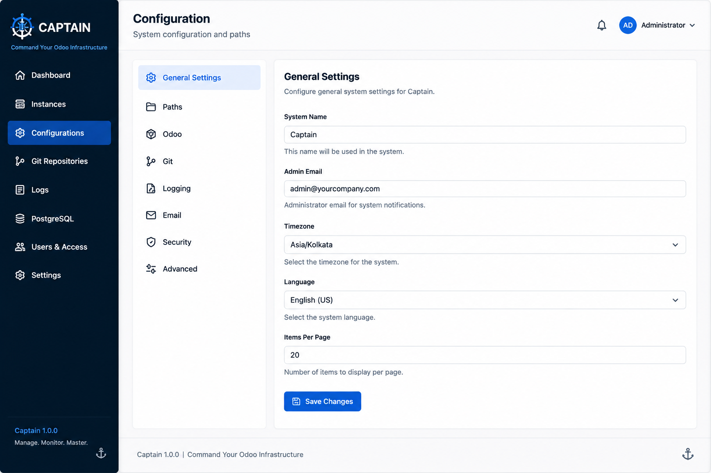

Captain is an open-source Odoo administration platform designed to manage multiple Odoo environments from a single interface. Whether you're working with development, staging or production servers, Captain keeps everything organized and under your control.
Managing multiple Odoo instances using terminal commands and configuration files quickly becomes difficult. Captain provides a clean interface for starting services, monitoring environments, downloading logs and managing users without leaving Odoo.
Instance ManagementCreate and manage multiple Odoo environments from one place. |
Start / Stop / RestartControl Odoo services without using the terminal. |
Log ManagementDownload and inspect log files directly from the interface. |
Multi Version SupportManage multiple Odoo versions from one application. |
User PermissionsRestrict access to specific instances for different users. |
PostgreSQL IntegrationManage database services alongside your Odoo environments. |



git clone https://github.com/priyanshuthakar24/captain.git Copy the module to your custom addons directory. Update the Apps List. Install Captain.
Captain is released under the LGPL-3 License.
GitHub
https://github.com/priyanshuthakar24/captain
Developed by Priyanshu Thakar